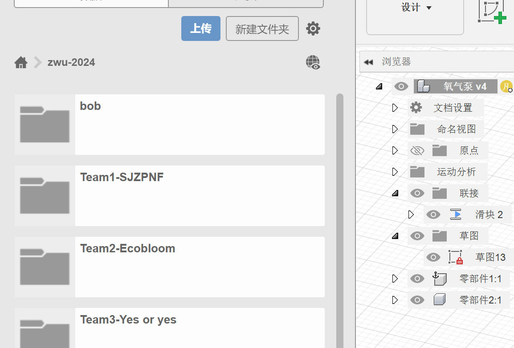
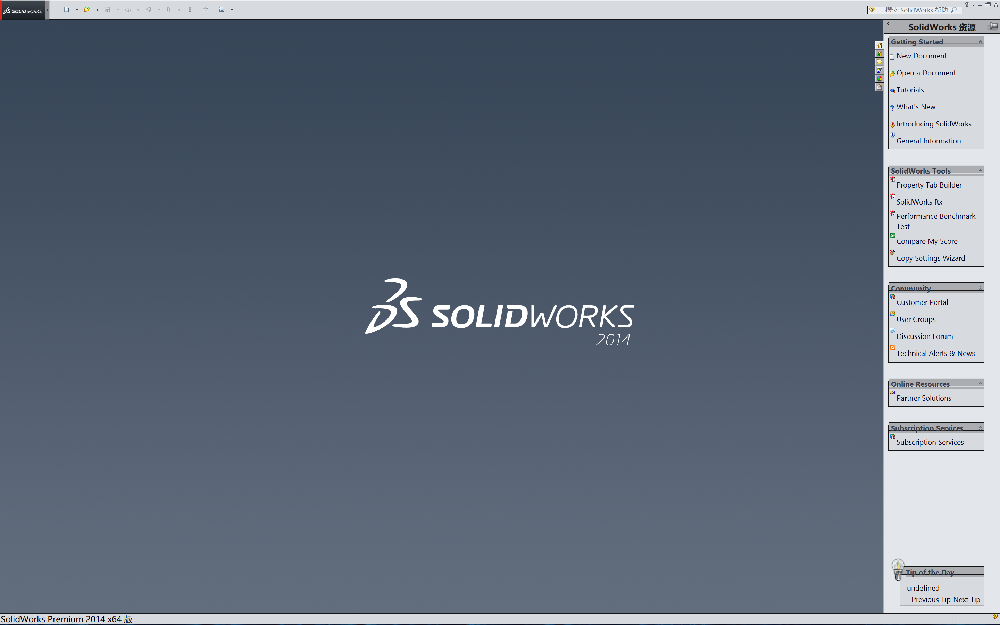
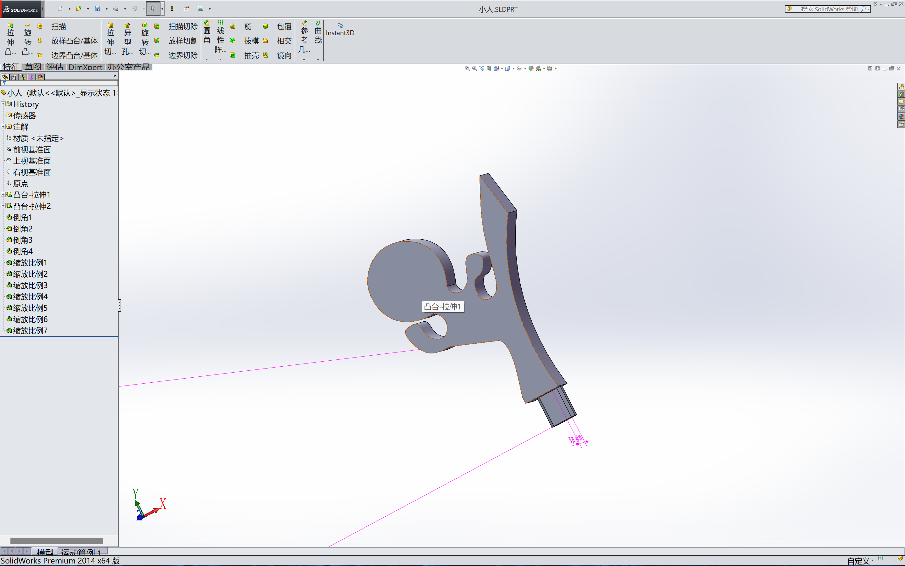

Get ready and join the team

video show how to design history
SolidWorks
SolidWorks is a 3D CAD (Computer Assisted Design) software developed by Dassault Systèmes. It's mainly used for mechanical and product design, although it's also used for a wide range of other applications such as civil engineering, architecture, and aeronautical design.
1.Powerful 3D Modeling Features: SolidWorks is known for its intuitive 3D design and product development tools, which quickly produce high-quality 3D models.
2.Simulation and Validation: SolidWorks includes a simulation toolkit that allows you to test your product designs before actual manufacturing, allowing for the detection and resolution of potential problems.
3.Non-Programming Automation: SolidWorks has a powerful pattern generation tool that you can use to create similar but slightly different parts, which is useful for rapidly generating product lines.
4.Electrical and Electronic Systems Design: SolidWorks also offers tools with electrical and electronic system design capabilities, which are useful for designs involving complex electrical wiring or electronic components.
5.Integrated CAM System: SolidWorks provides integrated CAM (Computer Assisted Manufacturing) tools, which means that you can plan how to manufacture the parts of your design on a machine tool while you are designing the product.
6.Wide Range of Applications: SolidWorks is widely used in various fields such as mechanical design, automotive design, electronic devices, medical equipment, industrial equipment, and mold manufacturing.
 